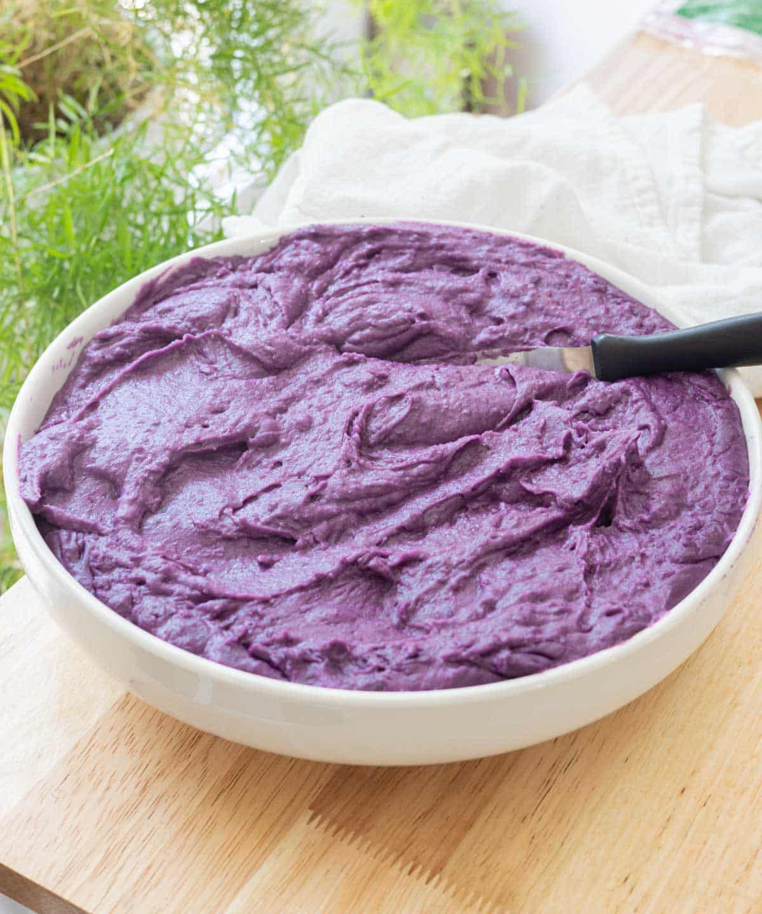

Ube Halaya

Description
Ube is the best dessert or dip
Ingredients
- 4.5 pounds ube, peeled
- 14 ounce can coconut milk
- 14 ounce can sweetened condensed milk
- 1 cup brown sugar
- 5 ounce can evaporated milk
- .25 cup butter
- 1 teaspoon vanilla extract (optionanl)
Steps
- Place yams into a large pot and cover with water; bring to a boil. Reduce heat to medium-low and simmer until tender, about 20 minutes. Drain and cool until safe to handle, about 20 minutes. Grate yams into the pot.
- Add coconut milk, sweetened condensed milk, brown sugar, evaporated milk, butter, and vanilla extract to the pot over low heat. Cook, stirring constantly, until thick and sticky, about 20 minutes; mixture should be able to drop into room-temperature water and form a small ball when done.
- Transfer mixture into greased molds and chill until set, about 30 minutes
Home